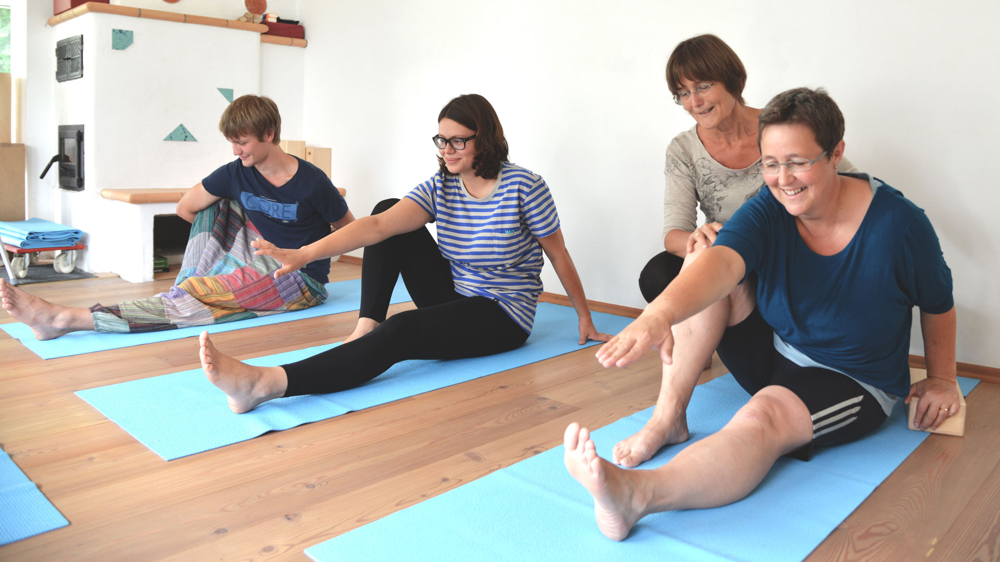
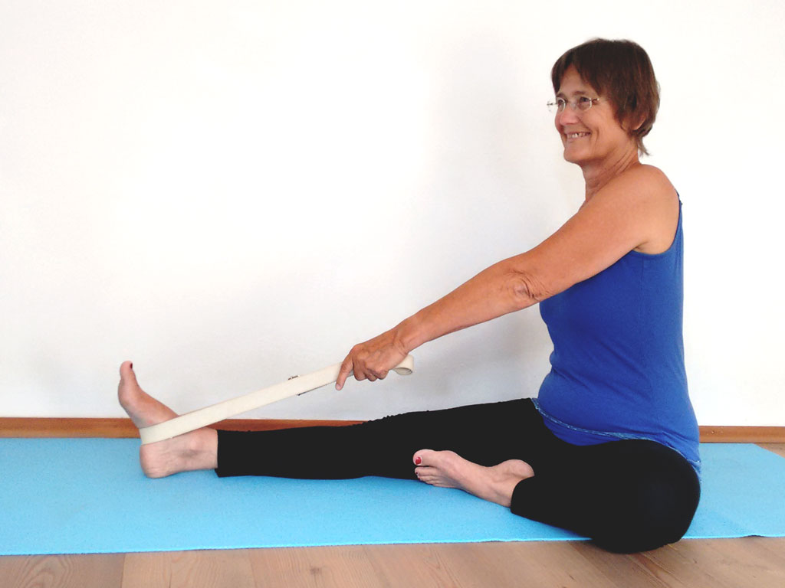
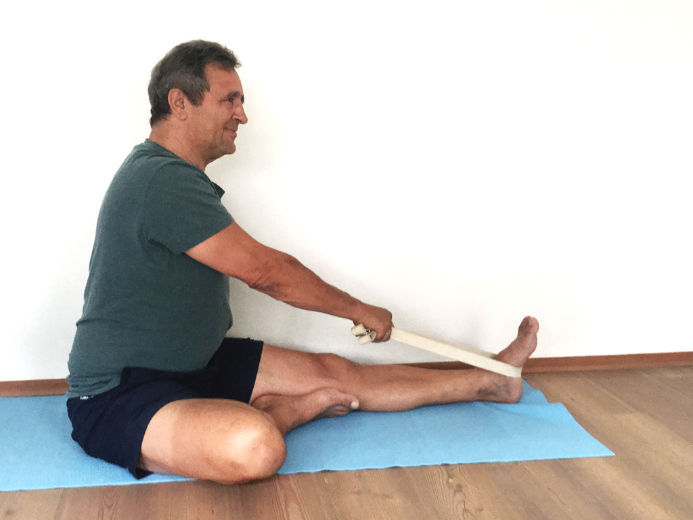

<main id="yoga">

<article class="full_width">

<h1>Hier lernen Sie Yoga</h1>




<p>
Ich unterrichte Hatha-Yoga auf Basis der ayurvedischen Marmalehre. Yoga zielt auf einzelne Muskeln und zusammenhängende Muskelsysteme, wirkt über die Muskeln hinein in das Nervensystem. Durch regelmäßiges Üben über einen längeren Zeitraum wird der Körper aktiviert, wo er zu passiv war, gestärkt, wo er zu schwach war, gedehnt, wo er verkürzt war und beruhigt, wo er zu aktiv war.
</p>

<p>
Marmas sind Energiezentren, an wichtigen Stellen im menschlichen Körper. Unser Yoga-Unterricht basiert auf einer intensiven Auseinandersetzung mit den Marmas. Diese werden in den einzelnen Asanas (Übungen) gezielt aktiviert.
</p>

<p>&nbsp;</p>
<h1>Yoga</h1>

<ul>

<li>fördert die Konzentrationsfähigkeit</li>
<li>verbessert die Körperwahrnehmung</li>
<li>stabilisiert das Herz-Kreislaufsystem</li>
<li>gleicht muskuläre Disbalancen aus</li>
<li>entlastet die Gelenke</li>
<li>beruhigt das vegetative Nervensystem</li>
<li>verändert nachhaltig die Körperhaltung</li>

</ul>

<p>
<strong class="green">
Damit erhöht sich Ihr psychomatisches Wohlbefinden dauerhaft.
</strong>
</p>

</p>

<p>&nbsp;</p>

<h1>Irene Salzmann</h1>

<p>
Ich hatte das große Glück, Yoga bereits mit 23 Jahren zu begegnen. Meine erste Yogalehrerausbildung absolvierte ich von 1985 bis 1988 mit dem Ziel, Yoga für mich selbst intensiver zu praktizieren. Auch in der Zeit, als meine drei Söhne meine volle Aufmerksamkeit brauchten, konnte ich mir den Freiraum schaffen, Yoga-Kurse und -Seminare zu besuchen und das tägliche Yoga-Üben in meinen Alltag einzubauen. Im Herbst 2010 begann ich bei meinem langjährigen Lehrer Reinhard Bögle am Yogaforum München eine zweite dreijährige Yogalehrerausbildung, die ich 2013 abgeschlossen habe. Seit dieser Zeit habe ich meinen Beruf als Altenpflegerin aufgegeben und unterrichte Yoga in Ottobrunn und in Neuperlach.
Mein Wissen und meine Fähigkeiten, Yoga zu praktizieren und zu unterrichten, entwickle ich laufend weiter durch den Besuch von Fachtagungen, Supervionsstunden und das eigene Üben.
</p>

<p>
Yoga hat in meinem Leben sowohl körperlich als auch seelisch eine sehr stabilisierende Wirkung. Es bereitet mir große Freude, dieses positive Erleben an meine Schüler weiterzugeben.
</p>


<p class="mail-irene"></p>

<p>&nbsp;</p>

<h1>Dietmar Hennig</h1>

<p>
  Meinen ersten Kontakt mit Yoga hatte ich im Sommer 2003 in einem Yoga-Seminar. Hier erkannte ich zum ersten Mal, dass eine sehr viel bewußtere Wahrnehmung meines Körpers – insbesondere des Bewegungsapparates – möglich ist, als ich es bisher kannte. Nach dem Besuch weiterer Yoga-Seminare im Haus Buchenried am Starnberger See begann ich im Herbst 2009 die Ausbildung zum Yogalehrer am Yogaforum in München. Diese habe ich im Frühjahr 2013 abgeschlossen. Heute besuche ich dort regelmäßig Kurse, nehme an einem Profi-Training teil und nutze Einzelstunden bei Reinhard Bögle, dem Leiter des Yogaforums München, zur Supervision und individuellen Weiterentwicklung. Die intensive Auseinandersetzung mit Yoga, zu der auch mein tägliches Üben gehört, führt fortwährend zu einem besseren Verständnis der Abläufe meines Körpers. Zu meinem Beruf als IT-Berater ist das Praktizieren und Unterrichten von Yoga ein idealer Ausgleich.
</p>

<p>
Diese positiven Erfahrungen im Umgang mit Yoga möchte ich gerne an meine Schüler weitergeben. Die gesteigerte Konzentrationsfähigkeit und die Möglichkeit, gezielt zu entspannen, helfen mir meinen Alltag kraftvoll anzugehen.
</p>

<p class="mail-dietmar"></p>

<p>&nbsp;</p>

</article>

</main>
